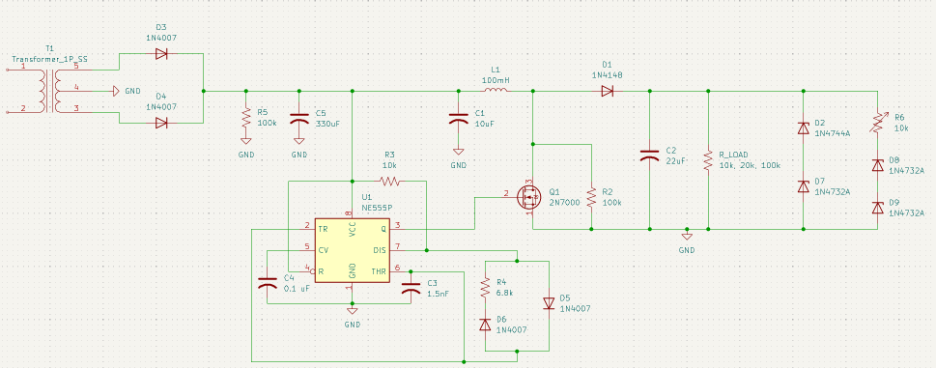
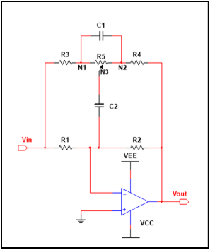
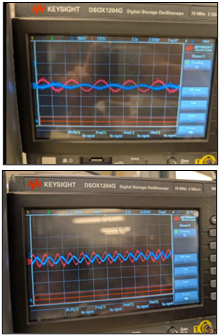

Engineering Projects
Microstrip RF syntheses, power converter hardware, PCB prototypes, and computational tools.
1090 MHz 4th-Order Chebyshev Microstrip Hairpin Filter
OngoingSynthesized and simulated a 4th-order Chebyshev bandpass filter centered at 1090 MHz with a 45 MHz passband ($FBW = 4.13\%$) for ADS-B signal reception[cite: 1]. Derived prototype $g_i$ values, admittance inverters ($J_{01}/Y_0 = 0.2419$, $J_{12}/Y_0 = 0.0448$), and even/odd mode impedances ($Z_{0e}, Z_{0o}$)[cite: 1]. Folded $\lambda/2$ resonators into U-shaped hairpins to cut board area by $>50\%$ and implemented direct $50\ \Omega$ tapped-line feeds to achieve return loss $S_{11} < -15\text{ dB}$[cite: 1].
AC-to-DC Power Supply & Step-Up Boost Converter
CompletedConstructed a two-stage power supply converting $\pm 7.5\text{ VAC}$ ($10\text{ V}_{\text{peak}}$, 60 Hz) into an intermediate $+10.0\text{ VDC}$ rail via a 1N4007 full-wave bridge rectifier and capacitive filter[cite: 7]. Stepped up voltage from $+9.25\text{ VDC}$ to $+18.65\text{ VDC}$ using an inductive Continuous Conduction Mode (CCM) boost topology ($V_{\text{out}} = V_{\text{in}} / (1 - D)$) driven by a 555-timer clock, with potentiometer duty-cycle control and output ripple verified at $\approx 71.6\text{ mV}_{\text{p-p}}$[cite: 7].


3-Channel Analog Audio Mixing Console & Multi-Band Equalizer
CompletedEngineered an analog audio processing console handling two line-level inputs and one electret condenser microphone channel[cite: 5]. Includes an active low-noise preamplifier with DC blocking ($1\ \mu\text{F}$) and high-frequency noise attenuation, feeding into a 3-channel virtual-ground inverting summing amplifier[cite: 5]. A unity-gain buffer isolates the mixer from a parallel active 1st-order Bass, Midrange, and Treble filter bank before driving a low-impedance speaker output stage[cite: 5].


Custom Mixed-Signal PCB Prototype (EE 201)
CompletedExecuted full schematic capture and physical trace routing for a mixed-signal printed circuit board adhering to standard PCB design rules and fabrication constraints[cite: 2]. Populated circuit boards using precision through-hole and surface-mount (SMD) soldering techniques, validating board-level signal integrity, power distribution, and functional timing with bench oscilloscopes, multimeters, and function generators[cite: 2].
Fortran & SMath Numerical Computation Pipelines
OngoingDeveloped compiled Fortran 90/95 routines and SMath symbolic worksheets to execute matrix transformations, Chebyshev prototype polynomial evaluations, and microstrip impedance transformations[cite: 1]. Automated analytical solving of electrical lengths ($\lambda_g / 4$), odd/even characteristic impedances ($Z_{0e}, Z_{0o}$), and physical microstrip line dimensions ($W/H, S/H$)[cite: 1].